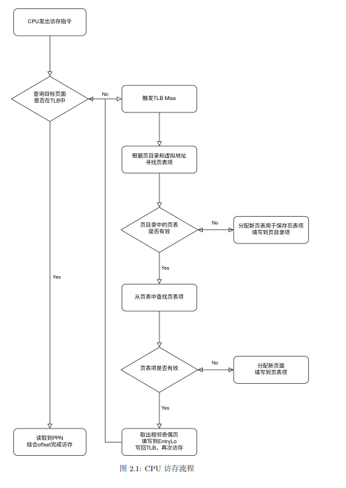
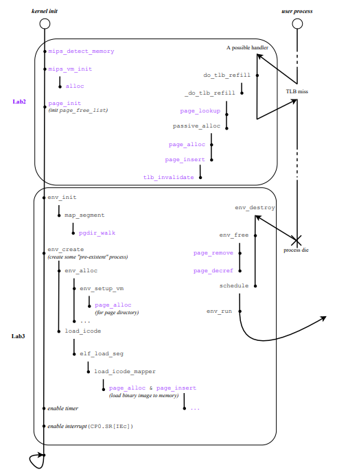
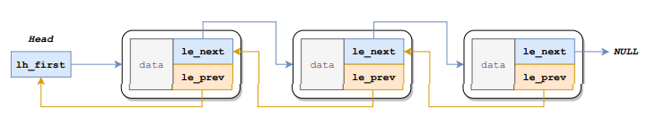
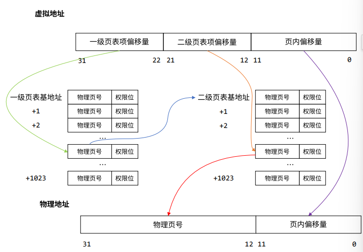
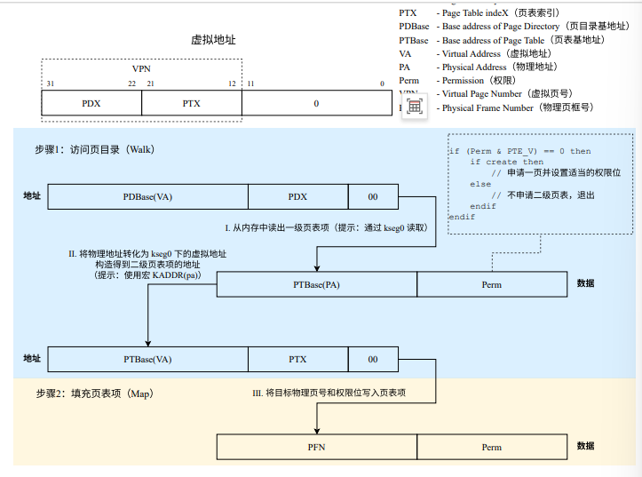

思考题
thinking 2.1 程序代码中的地址
问题：C程序中指针变量存储的是虚拟地址 or 物理地址？MIPS中lw和sw使用的地址是虚拟地址 or 物理地址？
回答：都是虚拟地址
thinking 2.2 链表宏
问题：宏实现链表的好处。/usr/include/sys/queue.h中单向链表和循环链表的实现，和本实验中双向链表比较。分析三者插入删除操作性能差异。
回答：
- 链表宏的好处
- 使用简单，有很多重复使用的代码可以方便编写，易于维护。
- 此外可以支持不同类型，只需要形式相同即可
- 插入删除操作性能差异
| 操作场景 | 单向链表 | 双向链表 | 循环链表 |
|---|---|---|---|
| 头部插入 | O(1) | O(1) | O(1) |
| 头部删除 | O(1) | O(1) | O(1) |
| 在节点后插入 | O(1) | O(1) | O(1) |
| 在节点前插入 | O(n) (需遍历) | O(1) | O(1) |
| 删除任意指定节点 | O(n) (需遍历) | O(1) | O(1) |
| 尾部访问 | O(n) | O(n) | O(1) |
thinking 2.3 Page_list结构体
问题：选择Page_list正确的展开形式
回答：正确的展开形式是C
1 | structPage_list{ |
首先le_prev由于要指向前一个项的*le_next指针，所以需要用**le_prev；
另外lh_first需要是指针类型，指向第一个元素
thinking 2.4 地址空间
问题1：ASID必要性
回答：多进程操作系统，不进程可能使用相同的虚拟地址，但映射到不同的物理地址。引入ASID记录当前表项属于哪个进程。CPU查找TLB时同时匹配VPN和ASID，提高多线程地址转换效率。
问题2：结合ASID段位数，说明4Kc中可容纳不同的地址空间最大数量
回答：ASID有0-7共八位，可以容纳 $2 ^ 8 = 256$ 个不同地址空间
thinking 2.5 tlb_invalidate
问题1：
tlb_invalidate和tlb_out的调用关系
回答：tlb_invalidate在kern/tlbex.c中，调用了tlb_out
请用一句话概括
tlb_invalidate的作用
回答：用于从TLB中根据指定的虚拟地址和ASID查找并 删除对应的旧表项（防止进程切换或内存映射改变后出现错误）
逐行解释
tlb_out中的汇编代码
回答：
tlb_out的逻辑是：存储，查找，匹配则删除，恢复
1 |
|
thinking A.6.3 三级页表自映射
问题：考虑39位三级页式存储，虚拟地址空间512GB，若三级页表的基地址为 $PT_{base}$ ，请计算三级页表页目录基地址；映射到页目录自身的页目录项（自映射）
回答：
页面大小 $2^{12}$字节 $= 4KB$
页表项大小 $2^3$字节
页表项数量 $4KB/8B = 512 = 2^9$项
- 三级页表目录基地址
基地址= $PT_{base} + (PT_{base} >> 12) * 8 + (PT_{base} >> 21) * 8$
- 自映射索引
虚拟地址高9位决定了访问哪一个页目录项
自映射项的索引是$PT_{base}$在页目录中的位置
$Index = PT_{base} >> 30$
thinking 2.6 函数调用与CPU访存流程
问题：结合CPU访存流程与用户函数部分，尝试将函数调用与CPU访存流程对应起来，思考函数调用与CPU访存流程的关系
回答：
访存流程：

用户函数：

| CPU 访存环节 | 内核函数 | 行为 |
|---|---|---|
| 查询 TLB | tlb_invalidate / tlb_out | 硬件自动查；程序在修改后使其失效 |
| 触发 TLB Miss | do_tlb_refill | 硬件发现缓存没命中，强制切换到内核态 |
| 寻找页表项 | page_lookup / pgdir_walk | 硬件自动走，程序在管理映射时调用 |
| 分配新页面/页表 | page_alloc / passive_alloc | 发现映射不存在时，内核进行分配 |
| 填写/返回结果 | page_insert | 建立VA→PA映射 |
thinking 2.7 其他体系结构的内存管理
问题：简单了解并叙述X86体系结构中的内存管理机制，比较X86和MIPS在内存管理上的区别
回答：
X86内存管理是分段和分页两阶段的过程，其中有 硬件页表遍历的过程
发生 TLB Miss时，MMU会根据CR3寄存器指向的基地址，去内存中逐级查找页表。
- 若找到，硬件自动更新TLB；
- 若页表项无效，则触发缺页异常转交内核处理
主要区别：
- MIPS为两级页表，X86为四级页表；
- MIPS硬件只负责在TLB中匹配，若Miss则直接强制跳转汇编入口，通过代码将页表项填入；X86是硬件负责，Miss后CPU内部逻辑会自动遍历内存中页表。只有未分配时程序才会介入；
- MIPS页表结构无硬性规范；X86页表结构为硬件强制固定。
难点分析
需要理解访存流程和内存映射布局
物理管理内存
- 双向链表宏的展开和使用逻辑（le_prev是二级指针，指向前一个元素的le_next指针的地址）

- 物理页面生存周期（pp_ref后page_free）
虚拟管理内存
- 两级页表结构

pgdir_walk和pgdir_insert查找流程

访问内存与TLB重填
- 4Kc中的
TLB采用 奇偶页 设计，VPN的高19位和ASID作为Key
一个映射 $ <VPN, ASID> → <PFN, C, D, V, G>$ - tlbr,tlbwi,tlbwr,tlbp指令
- 维护TLB：
- 更新页表中虚拟地址对应页表项同时，将TLB中对应的旧表项无效化
- 下一次访问该虚拟地址时，硬件触发TLB重填异常，OS对TLB进行重填。
实验体会
需要阅读的代码和理解的内容相比lab1又多了很多。
对于访存流程其实上学期CO就已经学习过一些内容，但是实际上手的时候发现只是有一个大概的概念，具体实现还是会遇到很多问题。
对链表的操作也不是很熟练，无法自如使用各种宏来达到自己的目的。
每个lab需要学习的内容感觉很多，本次lab主要学习了物理内存和虚拟内存两部分，对于tlb重填部分掌握程度并不高，后续有时间需要加强一下。
感觉很难依靠自己根据指导书填出空的内容，每次都是对着答案对着讲解才能慢慢理解一些，对于知识点的掌握很零碎，希望后续能加深对操作系统整体的理解。
关于上机，自映射的内容课上没有学的很明白，上机罚坐1.5h QAQ，其实感觉理论和上机结合紧密一点也挺好的，可以对课上的知识点理解得更深一些，后面要抓紧把前面讲过的理论内容复习一遍！
如果您喜欢此博客或发现它对您有用，则欢迎对此发表评论。 也欢迎您共享此博客，以便更多人可以参与。 如果博客中使用的图像侵犯了您的版权，请与作者联系以将其删除。 谢谢 ！